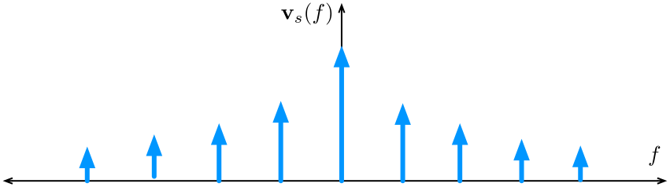
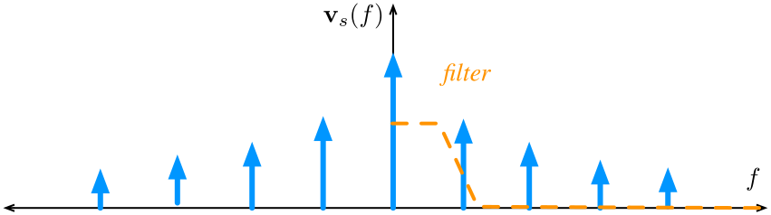
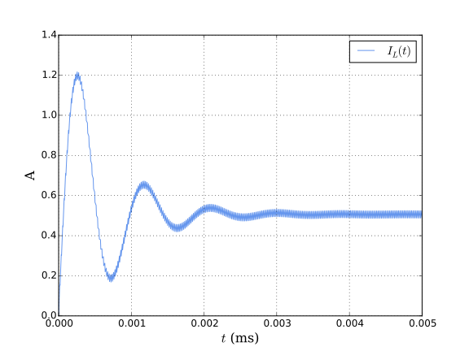
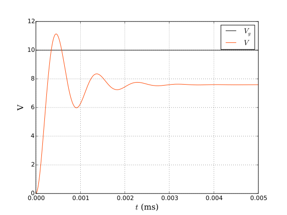

Principles of Steady-State Converter Analysis
Contents
Principles of Steady-State Converter Analysis¶
Before we start our treatment of DC-DC converters, we need to be reacquainted to the notion of an Ideal Switch and get familiarised with the type of ideal switches that help us with analysing converters.
Single pole, single throw (SPST) Switch. A simple on-off switch.
{kind=link}
Fig. 1 An ideal SPST Switch¶
Switch Closed: \(v(t) = 0\).
Switch Open: \(i(t)=0\).
\(\forall t\): \(\underbrace{p(t)}_{\text{Power}} =v(t) i(t) =0\).
Single pole, double throw (SPDT) Switch. The common port is connected to either 1 or 2.
{kind=link}
What is ideal about them?
They consume zero power. When they are off they block the current perfectly and when they conduct they have zero resistance (no voltage drop).
In practice we use semi-conductor devices (e.g., diodes and transistors) to realise these switches. Semi-conductor devices are desired to operate like this (loss-less).
DC-DC Converter Example¶
In the circuit below, for \(V_g=100\text{V}\) and \(R=5\Omega\), design a converter such that \(V=50\text{V}\), \(I=10\text{A}\).
{kind=link}
We investigate the following three designs:
Resistive Voltage Divider (Dissipative realisation)
Series Pass Regulator (Dissipative realisation)
Use of an SPDT Switch
Resistive Voltage Divider¶
A variable resistor in series with the load yields the following circuit.
{kind=link}
Series Pass Regulator¶
A series pass regulator (aka series voltage regulator) comprises of a transistor operating in the linear (aka ohmic, active) region.
{kind=link}
Use of an SPDT Switch¶
Using an SPDT switch changes the dc component of the input voltage. If we switch back and forth between on and off position in effect we chop the input voltage.
{kind=link}
The switching duty cycle is denoted by \(D\) where \(0\leq D\leq 1\). We use \(D'\) to denote its complement where \(D'=1-D\). The switching period is represented by \(T_s\) and consequently the switching frequency, \(f_s=\dfrac{1}{T_s}\).
{kind=link}
DC component (\(\equiv\) average value): \(\begin{align*} \langle v_s \rangle = \dfrac{1}{T_s} \int_0^{T_s} v_s(t)\mathrm{d}t = \dfrac{1}{T_s} (D T_s V_g) = D V_g \end{align*}\)
Computing the Fourier series of the periodic switching signal \(v_s(t)\) yields
Consequently, its Fourier transform is
with the spectrum depicted below.
{kind=link}
The magnitude of \(n\)-th harmonic is \( \dfrac{V_g}{n\pi} | \sin \left ( \pi n D\right ) |\). The effect of applying a low pass filter to remove switching harmonics and pass only the DC component is presented pictorially next.
{kind=link}
To remove the switching harmonics one can implement the low-pass filter using \(L\) and \(C\) elements. Something that is known as an \(L-C\) low-pass filter (and ideally is loss-less). Placing the filter in the circuit one obtains
{kind=link}
Fig. 2 Our first buck converter!¶
The cutoff frequency of the the filter should be much smaller than the switching frequency \(f_s\). The circuit is a buck converter.
The relationship between the DC component of the output voltage \(v\) and the input voltage \(V_g\) is given by
This relationship is presented below.
{kind=link}
Fig. 3 The graph of the conversion ratio of buck converter as a function of the duty cycle \(D\).¶
In an ideal scenario, the relationship between the input and the (steady-state) DC value of the output, \(V\) is a function of the duty cycle \(D\) and can be written as
In a buck converter \(M(D)=D\).
Three basic DC-DC converters of interest are:
Buck converter
Boost converter
Buck-boost converter
The boost and buck-boost converters schematics realised using ideal switches are demonstrated in Fig. 4 and Fig. 5, respectively. Taking a route similar to what we took to analyse buck converters, that is using Fourier analysis and filtering, is full peril and will not take us far enough. In general, Fourier analysis along with low pass filter arguments are not always easy to apply to arbitrary converters. A systematic approach is required to analyse different circuits. Understanding and applying such an approach is the focus of this chapter.
{kind=link}
Fig. 4 Boost converter with ideal switch¶
{kind=link}
Fig. 5 Buck-boost converter with ideal switch¶
Inductor volt-second balance, capacitor charge balance, and the small ripple approximation¶
Consider the buck converter of Fig. 6.

Fig. 6 Buck converter with ideal switch¶
The actual output voltage waveform will not be exactly equal to a constant DC value and it will look like what is depicted in Fig. 7. Let’s assume it takes the following form
For example, \(V=1 \text{V}\), and the maximum of the additive ripple wave form is 10 mV, i.e., \(\max |v_{ripple}(t)|=10 \text{mV}\).
{kind=link}
In a well-designed converter, the output voltage ripple is much smaller than the DC component. Hence, the waveforms can be easily determined by ignoring the ripple: \(\|v_{ripple}(t)\|\ll V\) Hence, \(v(t) \approx V\): small-ripple approximation
The small-ripple approximation is useful only for continuous waveforms. Particularly
innductor currents
capacitor voltages
Small-ripple approximation cannot be applied to discontinous signals (e.g.~pulsating waveforms that switch)
It is used to simplify the solutions to the ODEs describing the network. The small-ripple approximation let the solution to be calculated as linear functions. It is also known as the linear ripple approximation.
It is only valid when \(T_s\) is short compared to the network time-constants.
(Relevant) Lame Joke of the Day Reality:
An engineer thinks that equations are an approximation to reality.
A physicist thinks reality is an approximation to equations.
A mathematician doesn’t care.
Buck converter analysis¶
Let’s revisit our trusty friend, the buck converter. In what follows we will go through the process of developing a systematic approach to analyse its behaviour at steady-state. To this aim we investigate the circuit for the two positions of the switch.
Switch in position 1:
{kind=link}
Fig. 8 The buck converter circuit when the switch is in position 1.¶
Inductor voltage: \(v_L = V_g -v(t)\)
Small ripple approximation: \(v_L \approx V_g- V\)
Inductor current: \(v_L(t) = L\dfrac{di_L(t)}{\mathrm{d}t}\)
Variation of current (the slope):
Attention
The inductor current changes with a constant slope.
Switch in position 2:
{kind=link}
Fig. 9 The buck converter circuit when the switch is in position 2.¶
Inductor voltage: \(v_L = -v(t)\)
Small ripple approximation: \(v_L \approx - V\)
Inductor current: \(v_L(t) = L\dfrac{di_L(t)}{\mathrm{d}t}\)
Variation of current (the slope): \(\dfrac{di_L(t)}{\mathrm{d}t}\approx\dfrac{- V}{L}\)
Attention
The inductor current changes with a constant slope.
Inductor voltage and current waveforms¶
Now, let’s see how the voltage across the two terminals of the inductor behaves over a switching period. From the equations above we can depict the wave-form as below.
{kind=link}
Fig. 10 The inductor voltage waveform in a buck converter.¶
Remember that the relationship between the current through and an inductor and its voltage is
In other words, the slope of the current waveform is given by \(v/L\). From this observation:
The current waveform is depicted below.
{kind=link}
Fig. 11 The inductor current waveform in a buck converter.¶
Note
In practice the ripple is set to be around 10-20 percent of the DC value.
Determination of inductor current ripple magnitude¶
The total, peak-to-peak change in \(i_L\) as observable from Fig. 11 in each sub-interval is
Equivalently, the peak-to-average ripple (half of the peak-to-peak ripple) is
This relationship can be used to select the appropriate magnitude of \(L\) to achieve a certain ripple.
Inductor current waveform during turn-on transient¶
Inductor current waveform during turn-on transient:
Converter in equilibrium: \(i_L((n+1)T_s)=i_L(nT_s)\)
Numerical solution for \(i_L(t)\) and \(v(t)\) using a circuit simulator¶


\(C=22 \mu\text{F}\), \(L=\text{mH}\), \(R=15\Omega\), \(V_g=10\text{V}\), \(T_s=20\mu \text{s}\), \(D=0.75\).
Note that the waveforms are made up of line segments.
Ripple after \(5 \text{ms}\): 0.01850875. Expected ripple at steady state: \(\Delta i_L = \dfrac{V_g-V}{2L}DT_s=0.01875\).
The principles of inductor volt-second balance and capacitor charge balance¶
The principle of inductor volt-second balance¶
Inductor defining relation: \(v_L = L \dfrac{\mathrm{d} i_L(t)}{\mathrm{d}t}\)
Integrating the current over one switching period results in
In periodic steady state, that is, when the transients have settled down and the converter is in equilibrium, the net change in inductor current is zero:
Hence, the total area (or volt-second) under the inductor voltage waveform is zero whenever the converter operates in steady state.
Inductor volt-second balance
The average inductor voltage is zero in steady state.
Inductor volt-second balance in buck converters¶
The integral of the voltage waveform (see Fig. 10) is the area of rectangles:
The average voltage is
After applying the inductor volt-second balance principle, i.e.~equating the average value to zero and solving for \(V\) yields
The principle of capacitor charge balance¶
The capacitor defining relation is \(i_C(t) = C \dfrac{\mathrm{d}v_C(t)}{\mathrm{d}t}\) Integrating over one switching period:
As above, in preiodic steady state, the net change in capacitor voltage is zero:
Hence, the total area (or charge) under the capacitor current waveform is zero whenever the converter operates in steady state.
Capacitor charge balance
The average capacitor current is zero in steady state.
Boost Converter Analysis¶
Consider the Boost converter with ideal switch of Fig. 4. As we will see in future chapters this circuit can be realised in practice with a power transistor and a (free-wheeling) diode. The practical circuit realisation is presented in Fig. 12.
{kind=link}
Fig. 12 A practical realisation of the boost converter¶
Switch in position 1:
{kind=link}
Fig. 13 The boost converter circuit when the switch is in position 1.¶
The inductor voltage and capacitor current are
After applying the small ripple approximation one obtains the following relationships:
Switch in position 2:
{kind=link}
Fig. 14 The boost converter circuit when the switch is in position 2.¶
In this case the inductor voltage and capacitor current are
Again, applying the small ripple approximation results in
Inductor volt-second balance in boost converters¶
{kind=link}
Fig. 15 The inductor voltage waveform in a boost converter.¶
From the volt-seconds balance principle applied to inductor:
Solving the algebraic equation above, one obtains the voltage conversion ratio as
Conversion ratio of the boost converter \(M(D)\)¶
The conversion ratio of the boost converter as the function of the duty cycle is depicted in Fig. 16 and is given below:
{kind=link}
Fig. 16 The graph of the conversion ratio of boost converter as a function of the duty cycle \(D\).¶
Note
The ideal conversion rate goes to infinity. But real converters cannot achieve that. In fact, the maximum output of a converter is limited by the losses (we will study losses in the future.)
Capacitor charge balance in boost converters¶
The waveform of the capacitor current in a boost converter is presented below:
{kind=link}
Fig. 17 The capacitor current waveform in a boost converter.¶
Net charge applied to the capacitor over one period:
Determination of inductor current ripple in boost converters¶
From the inductors defining relationship and in light of the voltage waveform of an inductor one can write
The waveform is depicted in Fig. 18.
Fig. 18 The inductor current waveform in a boost converter.¶
The peak-to-peak change in inductor current during subinterval 1:
One may choose \(L\) for a desired ripple magnitude given other circuit parameters.
Determination of capacitor voltage ripple in boost converters¶
Using the defining equation for capacitors: $\( \begin{align*}\dfrac{dv_C(t)}{\mathrm{d}t}&=\dfrac{i_C(t)}{C} \approx \begin{cases} \frac{-V}{RC} & \text{Position 1}\\ \dfrac{I}{C}-\frac{V}{RC} & \text{Position 2} \end{cases}\end{align*} \)$
The capacitor voltage waveform is presented in Fig. 19.
{kind=link}
Fig. 19 The capacitor voltage waveform in a boost converter.¶
The peak-to-peak change in capacitor voltage during subinterval 1 is described by
As before, one can choose \(C\) for a desired ripple magnitude. In practice, capacitor equivalent series resistance (esr) leads to increased voltage ripple.
Ćuk (pronounced chook) converter analysis¶
A Ćuk converter with ideal switch is presented in Fig. 20. The practical implementation of the circuit using transistors and diodes is given in Fig. 21.
{kind=link}
Fig. 20 Ćuk converter with ideal switches¶
{kind=link}
Fig. 21 Ćuk converter practical realisation using power transistor and diode¶
Switch in position 1: When the switch is in position 1, the transistor conducts currents and \(C_1\) releases energy to the output. The equivalent circuit for this case is depicted below.
{kind=link}
Fig. 22 The Ćuk converter circuit when the switch is in position 1.¶
Inductor voltages and capacitor currents are
Applying the small ripple approximation gives
Switch in position 2: In this case the diode conducts, and capacitor \(C_1\) is charged from the input. This circuit configuration for this case is presented below.
{kind=link}
Fig. 23 The Ćuk converter circuit when the switch is in position 2.¶
Inductor voltages and capacitor currents:
Small ripple approximation:
The principles of inductor volt-second and capacitor charge balance state that the average values of the periodic inductor voltage and capacitor current waveforms are zero, when the converter operates in steady state. Hence, to determine the steady-state conditions in the converter, sketch the inductor voltage and capacitor current waveforms, and equate their average values to zero.
The waveforms of the voltages of \(L_1\) and \(L_2\) are presented in Fig. 24 and Fig. 25, respectively.
{kind=link}
Fig. 24 \(L_1\) voltage waveform in Ćuk converter with ideal switches¶
{kind=link}
Fig. 25 \(L_2\) voltage waveform in Ćuk converter with ideal switches¶
The volt-second balance principle applied to \(L_1\) and \(L_2\) give
The waveforms of the currents of \(C_1\) and \(C_2\) are presented in Fig. 26 and Fig. 27, respectively.
{kind=link}
Fig. 26 \(C_1\) current waveform in Ćuk converter with ideal switches¶
{kind=link}
Fig. 27 \(C_2\) current waveform in Ćuk converter with ideal switches¶
Applying the charge balance principle to \(C_1\) and \(C_2\) results in
During both switch positions, the capacitor current \(i_{C2}\) is equal to the difference between the inductor current \(i_2\) and the load current \(V_2/R\). When the ripple is neglected, \(i_{C2}\) is constant and equal to zero.
The conversion ratio of a Ćuk converter is
Its graph in term of the duty cucle \(D\) is depicted below.
{kind=link}
Fig. 28 The graph of the conversion ratio of Ćuk converter as a function of the duty cycle \(D\).¶
Determination of \(L_1\) and \(L_2\) currents ripples¶
Using the defining equation for inductors \(L_1\) and \(L_2\) and given their voltages over a switching interval we obtain
The corresponding currents waveforms are given below.
{kind=link}
Fig. 29 \(L_1\) current waveform in Ćuk converter with ideal switches¶
{kind=link}
Fig. 30 \(L_2\) current waveform in Ćuk converter with ideal switches¶
Determination of \(C_1\) and \(C_2\) voltages ripples¶
Applying the capacitor defining relationship to \(C_1\) and given its voltage waveform, one obtains
{kind=link}
Fig. 31 \(C_1\) voltage waveform in Ćuk converter with ideal switches¶
Doing the same to \(C_2\) yields $\( \dfrac{dv_2(t)}{\mathrm{d}t}=\dfrac{i_{C2}(t)}{L}\approx 0 ??? \)$
Error
This is weird! Of course there is ripple in the waveform. The small ripple approximation does not explain everything here. We need a better approximation.
Estimating ripple in converters containing two-pole low-pass filters (e.g. Buck and Ćuk)¶
Consider the circuit with an output two-pole filter as shown below.
{kind=link}
The inductor current waveform is given below
{kind=link}
What is the capacitor current?
{kind=link}
If the capacitor voltage ripple is small, then essentially all of the ac component of inductor current flows through the capacitor. The inductor current ripple must not be neglected.
the current \(i_C(t)\) is positive for half of the switching period. This positive current causes the capacitor voltage \(v_C(t)\) to increase between its minimum and maximum extrema. During this time, the total charge \(q\) is deposited on the capacitor plates, where
The total charge \(q\) is the area of the triangle, as shown
Having \(q = C (2\Delta v)\) and solving for \(\Delta v\):
In practice, capacitor equivalent series resistance (esr) further increases the ripple, \(\Delta v\).
Summary:
Inductor current ripple in two-pole filters¶
Now consider a circuit with an input two-pole filter as shown in the following figure.
{kind=link}
{kind=link}
The total linkage flux \(\lambda\) is the area of the triangle, as shown
Letting \(\lambda = L (2\Delta i_L)\) and solving for \(\Delta i_L\):
As mentioned before inductor linkage flux is the same as its volt-seconds.
Summary¶
The dc component of a converter waveform is given by its average value, or the integral over one switching period, divided by the switching period. Solution of a dc-dc converter to find its dc, or steady-state, voltages and currents therefore involves averaging the waveforms.
The linear ripple approximation greatly simplifies the analysis. In a well-designed converter, the switching ripples in the inductor currents and capacitor voltages are small compared to the respective dc components, and can be neglected.
The principle of inductor volt-second balance allows determination of the dc voltage components in any switching converter. In steady-state, the average voltage applied to an inductor must be zero.
The principle of capacitor charge balance allows determination of the dc components of the inductor currents in a switching converter. In steady-state, the average current applied to a capacitor must be zero.
By knowledge of the slopes of the inductor current and capacitor voltage waveforms, the ac switching ripple magnitudes may be computed. Inductance and capacitance values can then be chosen to obtain desired ripple magnitudes.
In converters containing multiple-pole filters, continuous (nonpulsating) voltages and currents are applied to one or more of the inductors or capacitors. Computation of the ac switching ripple in these elements can be done using capacitor charge and/or inductor flux-linkage arguments, without use of the small-ripple approximation.
Converters capable of increasing (boost), decreasing (buck), and inverting the voltage polarity (buck-boost and Ćuk) have been described. Converter circuits are explored more fully in future.